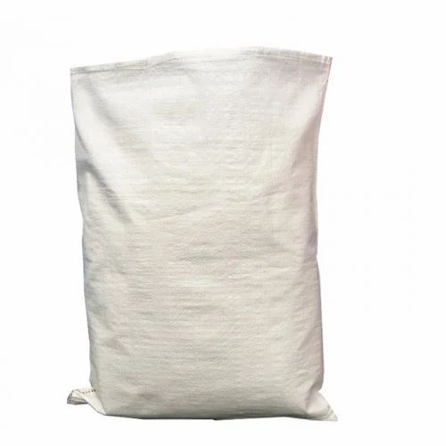

Our core product — high-strength polypropylene and HDPE woven sacks manufactured on modern circular looms for fertilizer, grain, chemicals, sand, cement and general industrial use. Available plain or custom-printed up to 6 colours.
| Capacity | 5 kg to 100 kg |
| Fabric Weight (GSM) | 50 – 120 GSM |
| Width | 30 cm – 100 cm (flat) |
| Denier | 800 – 2000 denier tape |
| Lamination | PP laminated / unlaminated |
| Printing | Up to 6-colour flexographic |
| Closure | Heat cut / stitched / with liner |
| MOQ | 10,000 pieces |
Applications
We manufacture across the full range of woven sack configurations — from basic unlaminated kraft-look bags to premium multi-colour BOPP finish.
Basic PP/HDPE woven sack for fertilizer, sand, salt and non-food industrial applications. Cost-effective, high volume.
PP film laminated on one or both sides with up to 6-colour flexo print. Used for rice, flour, animal feed and retail products.
High-density polyethylene woven sacks for heavy-load applications — aggregates, minerals, construction materials up to 100 kg.